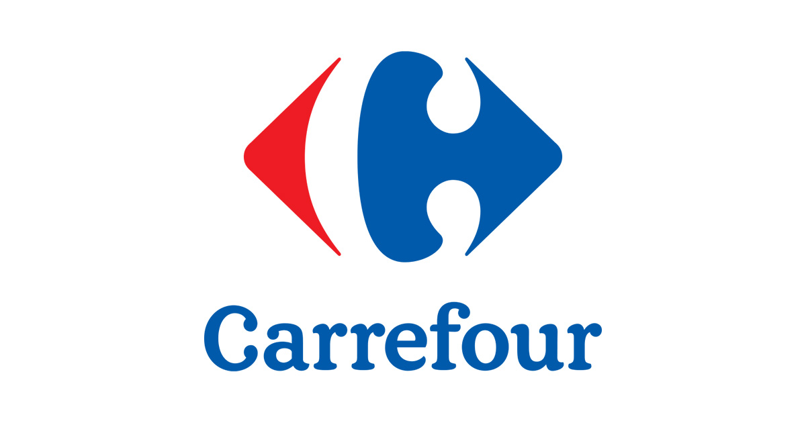

Comerț
Începând cu anii 1970, sectorul comerțului a fost bulversat de explozia marilor magazine de retail, a atras două treimi din cheltuielile alimentare în Franța, în 2008. Ca urmare, numeroase magazine mici au dispărut, apoi în 2009 se constată o mică revenire a lor în zonele centrale ale orașului. Puterea deținută de câteva mari companii — Carrefour, de exemplu, este a doua companie mondială în sector — le permite acestora să impună, într-o oarecare măsură, prețul producătorilor.

În ciuda concurenței întreprinderilor industriale, artizanatul a reușit să-și păstreze un loc important în economia franceză.